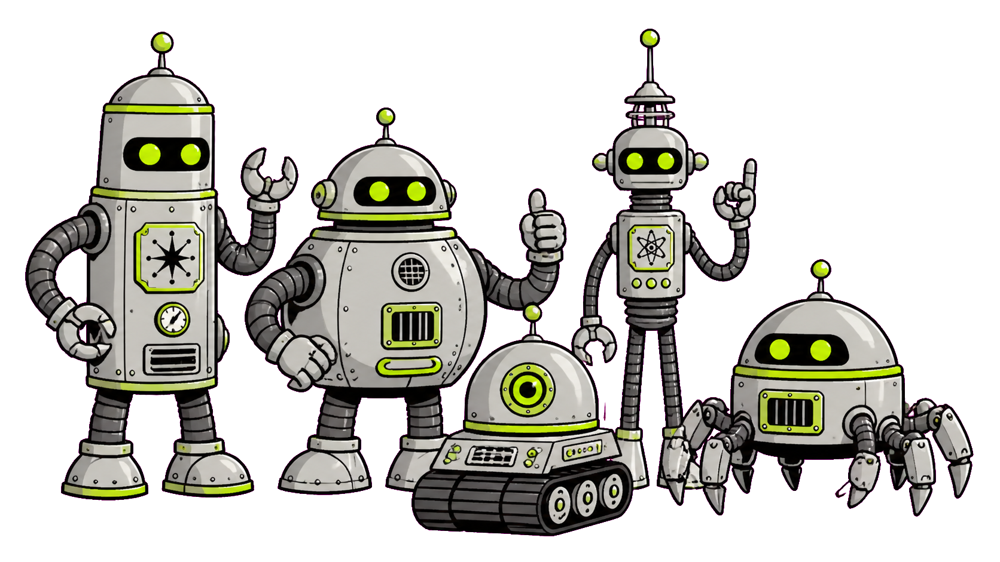
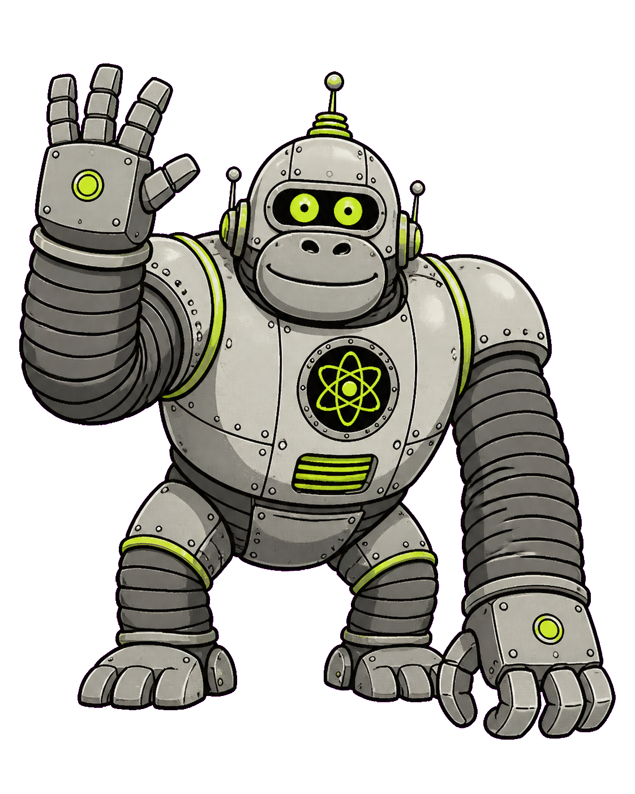

Customer Success
Send in the Clankers
Building Claude Code skills that do the work

Thank you!
Now go build a skill.
Questions, ideas, PRs? Let's talk
Dustin Krysak
dustin.krysak@konghq.com
bashfulrobot.github.io/claude-demo

Kong